The A Story Books
"The A Story Books" invited me to make an website for them, so I made it.
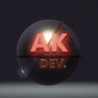
I am a Young frontend website developer From Pakistan 🇵🇰. I love making websites in HTML and CSS with JavaScript. I can build stunning websites with some animaions. I recently learned to use PHP with MySQL Database to make websites store data from fields. See my Github page.
Follow me on Github
📩Gmail: imakbss@gmail.com | Discord: ahmed_khan_developer
"The A Story Books" invited me to make an website for them, so I made it.


Just got an idea to make a big, descriptive website on chickens. There is information about 50 types of chickens. I named this website "Dr. Chickens Expert".

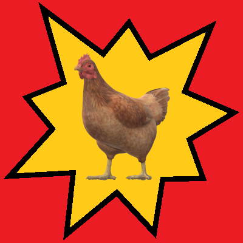


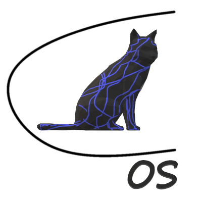
A free youtube downloader made with python. Download videos upto 720p for free. The python files are compressed to an ".exe" file

My first ever website was made for The A Story Books team. It was actually a very basic webpage with just a heading and pictures in anchor tags for stories, nothing else.
(The image for this version is lost)I made the dr chicken website first back in 2022. However the visuals still looked like a website from the early 2000s.
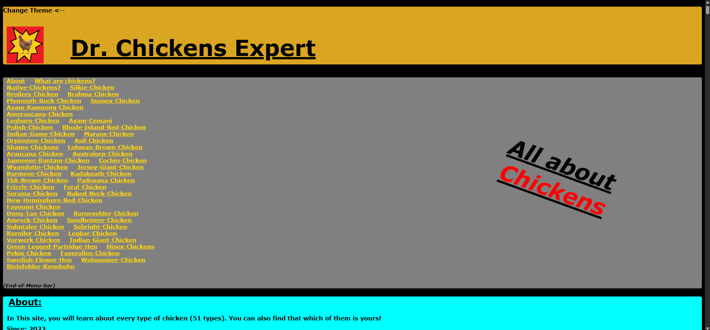
The whole website was redesigned and for the first time I used multiple pages and a Navbar. The website still looked very basic and old though just like the Old version of Dr Chicken Expert website.
(The image for this version is lost)This was the first time I thought to make my own Portfolio website. My previous developer name was Dev420. This website had a major design shift from my previous ones and looked more modern.
Note: My all previous commits of AK Dev website are available at Github.
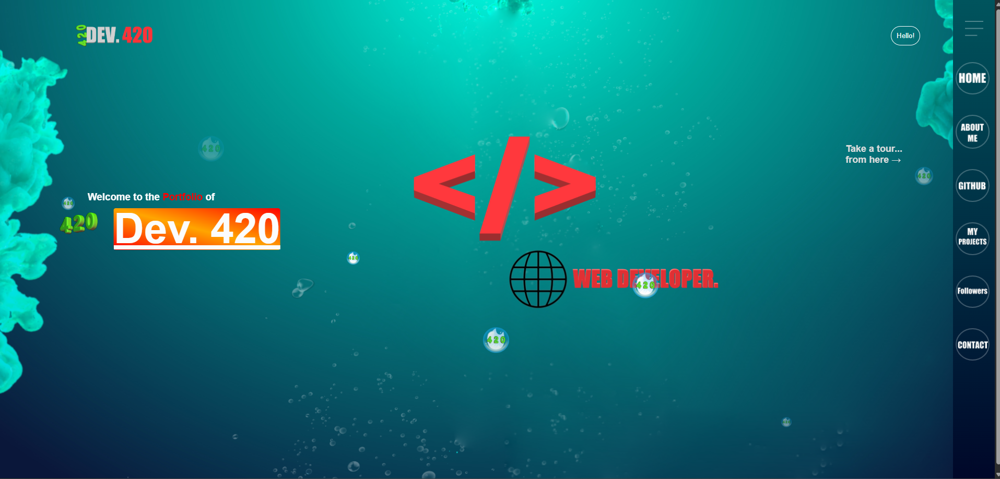
This time I renamed my developer name permanantly to "AK Dev". I also re-made the website for first time with bootstrap as the v1.0 of the portfolio. This website ended up being so responsive that it fits on a Smartwatch's(SWR50) screen!
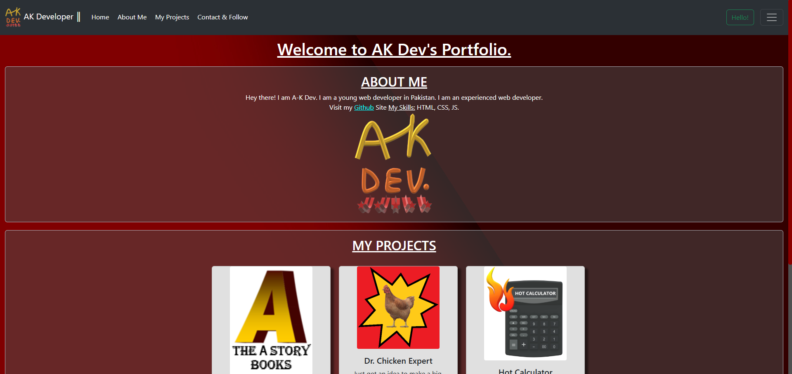
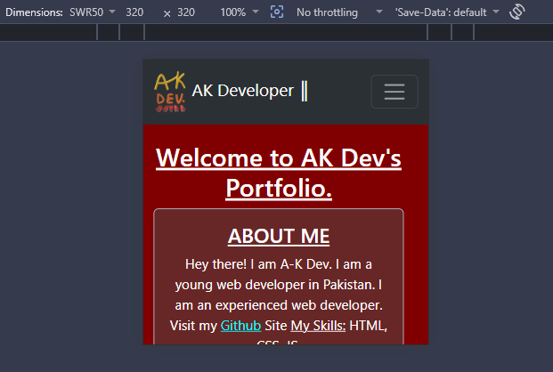
Just after the AK-Dev v1.0, I thought to redesign the Dr Chicken Expert as well with similar styling as my portfolio. This is also the current version of the website and it transitioned it from looks of 2000s to Bootstraps modern layouts!
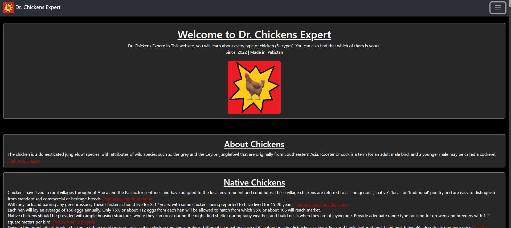
I added a popup pages for my projects and info instead of everything on one screen. I also made the landing page look cleaner for good first-impressions! This was also my first website to have SEO optimization and it worked so well that if you type "ak dev" on google search it appears on 1st page! I still use the same SEO codes to keep that position.
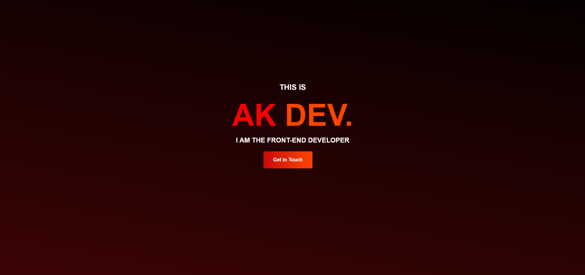
I learnt how to make a calculator in web. I also tried to make a miniature OS that does nothing but a calculator just for fun.
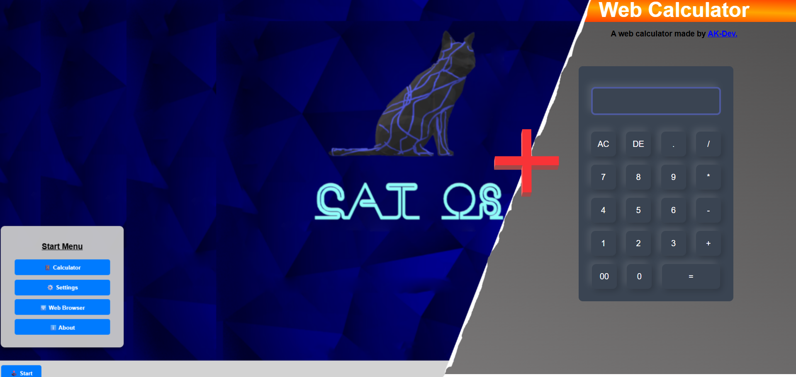
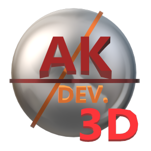
The next complete redesign of my portfolio site was v3.D. This was my fist website to contain a 3D model and also to have Animate-on-Scroll animations. However it was very heavy on low-end devices and i had to revert to the previous version i.e v2.2 after a short time.
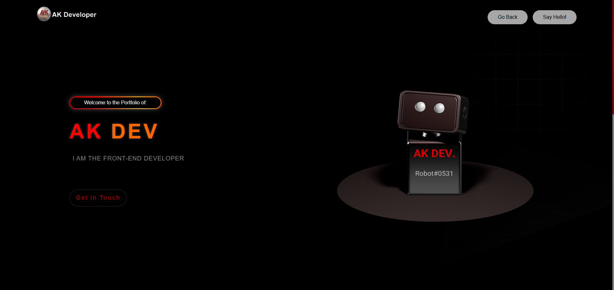
A complete re-design for the A Story Books website to compete with modern looks. It also consisted of a Firebase-powered Like buttons to rate the Stories. This is the current version of the site.
After learning basic python, I followed a tutorial to make a YouTube video downloader with Python. Just a basic terminal interface!
Another major release for my portfolio made from scratch. This is by far the most complex and animated website made by me. It has a lot of animations and bootstraps UI too. The v4.1 added a seperate button to link the AK Dev v3.D webpage so you can see the 3D bot if your device is capable enough. v4.2 added the Timeline that you are seeing now!
This website has 325 lines of HTML, 708 lines of CSS, and 81 lines of JS code! (Excluding codes and content of AK Dev v3.D webpage)
Uh, why would you need an image for a website you are currently viewing?Hi there!
From AK-Dev.